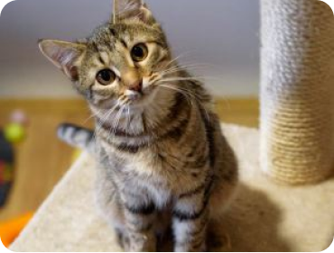
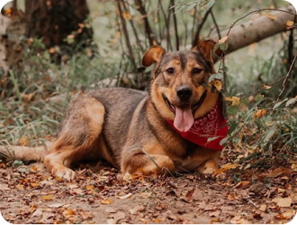
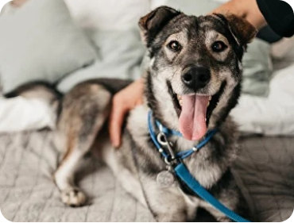
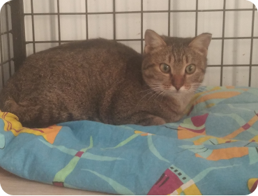
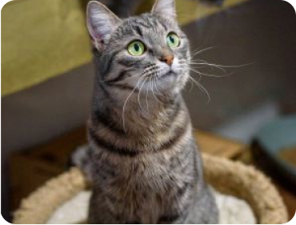
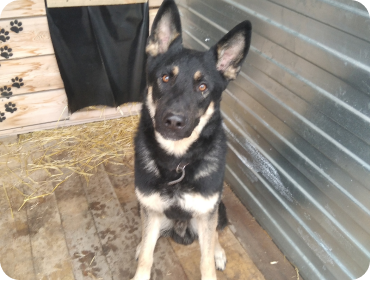

Мая, 7 лет
Собака Мая очень умная и
очень уверенная в себе »девушка»

Тигра, 1 год
Тигра девочка, её подобрали на обочине дороги, мокрую и грязную.

Винни, 2 годa
У нашего Винни в голове не опилки, но как и его тезка он очень
нуждается в своём Кристофере Робине!

Плюша, 2 года
Красивая двухлетняя кошечка, с доверчивым взглядом и светлой
душой.

Ула, 1 год
Улу привязали к ограде приюта — ещё для кого-то собака оказалась
ненужной

Василий, 4 года
У мусорного контейнера была найдена коробка c котятами. Котята ждали
спасения и мы помогли им.

Бусинка, 6 мес.
Была найдена в подвале снесенного дома с мамой и еще тремя котятами.

Зак, 1 год
Пришел к нам сам в 2 месяца. Увидел, что можно покушать и остался.

Чопа, 5 лет
Пса оставили на привязи его "хозяева", на территории пустыря.

Сёма, 1 год
Брэд нянчил Сёму с самого рождения. Вместе жили на стоянке.

Бим, 3 года
Бим был отловлен в промышленной зоне, где проживал.

Брэд, 2 года
Парень жил у сторожей на стоянке. Сильно голодал, поэтому мы его
забрали.